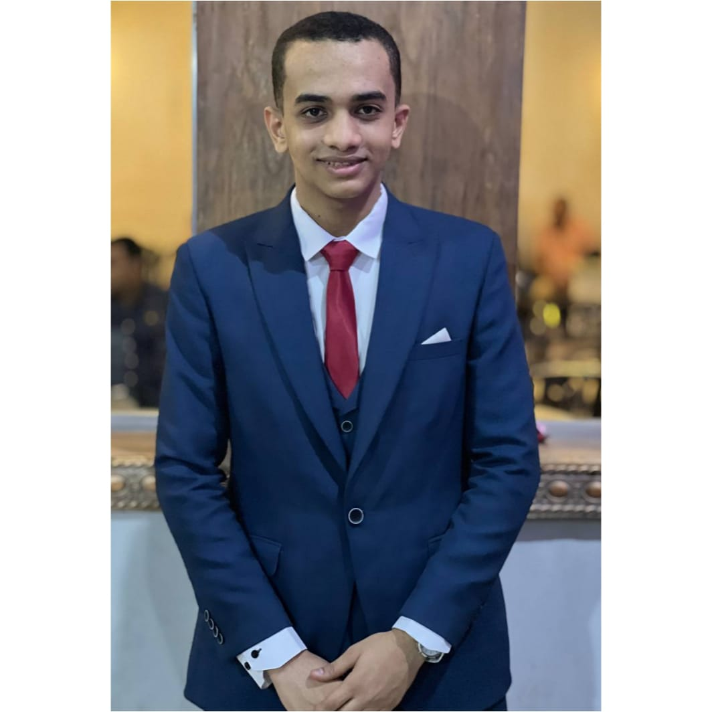

Employee Data Cleaning & Insights
Improved the quality and reliability of employee data by finding missing values, duplicates, inconsistent formats, and invalid entries, then cleaning and validating it into a structured, analysis-ready dataset.
Junior Data Engineer

I help startups and growing businesses turn scattered, unreliable data into clean, organized, automated pipelines they can trust for decisions.
I'm a Data Engineer who enjoys turning raw, messy data into reliable information that businesses can use to make better decisions. I like analyzing data, finding problems, and solving them in practical ways.
I work with data from different sources and use data cleaning and ETL processes to turn it into structured, trustworthy data, while supporting insights and KPIs through analysis tools.
I'm developing my skills through hands-on training with ITI and the Digital Egypt Pioneers Initiative (DEPI), and I'm looking forward to applying them to real business challenges.
Improved the quality and reliability of employee data by finding missing values, duplicates, inconsistent formats, and invalid entries, then cleaning and validating it into a structured, analysis-ready dataset.
Analyzed and visualized employee data with charts and graphs to reveal trends, patterns, and workforce insights that support data-driven decisions.
Have messy data holding your business back? Let's build a pipeline you can rely on.
abdelrahman.ahmed.alsayed@gmail.com linkedin.com/in/abd-elrahman-ahmed-elsayed 01095734045